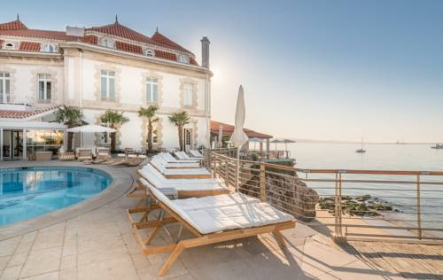

Este alojamento fica a 1 minuto a pé da praia. Situado na falésia da Costa do Estoril, o Hotel Albatroz goza de vistas soberbas sobre a Baía de Cascais. Esta unidade de 5 estrelas, acolhedora e encantadora, dispõe de uma piscina com vista para o mar e de um terraço ensolarado.
Os hóspedes podem relaxar nos quartos com temáticas individuais e vistas para a baía ou para a pitoresca Cascais, que podem estar localizados na ala nova ou na ala histórica do edifício. Todos os quartos englobam ar condicionado e amplas casas de banho com produtos de higiene pessoal Castelbel. As acomodações têm uma decoração elegante e uma cesta de vime com toalhas, para usar na praia ou na piscina.
Um buffet de pequeno-almoço fresco pode ser apreciado no Restaurante Panoramic do Hotel Albatroz, que apresenta vistas espectaculares sobre o mar. Uma extensa ementa é proporcionada para almoço e jantar. O bar do hotel, com terraço, serve diversas bebidas e/ou refeições ligeiras, durante todo o dia. Eventos de degustações de vinho e cozinha espectáculo também são realizados em determinadas datas no hotel. Alternativamente, existem vários restaurantes no centro de Cascais, a uma caminhada de 5 minutos.
A área de piscina do Albatroz, situada nos terrenos ajardinados, disponibiliza um retiro tranquilo onde os hóspedes podem descontrair numa espreguiçadeira e relaxar ao sol. Para explorar a área, poderá alugar uma bicicleta ou um carro. Uma loja gourmet faz parte do hotel, com vários produtos para os entusiastas de comida gourmet e bons vinhos.
A popular Praia de Cascais está a uma caminhada de 5 minutos, onde os hóspedes poderão apreciar o sol ou um mergulho refrescante. A Estação Ferroviária de Cascais fica a 5 minutos a pé. O Albatroz Hotel está localizado a menos de 17 km da pitoresca Sintra e a 30 minutos de carro de Lisboa. O Aeroporto Internacional da Portela situa-se a 35 km.
Esta é a parte de Cascais que os hóspedes preferem, de acordo com comentários independentes.
Esta propriedade também tem uma das localizações melhor pontuadas em Cascais! Os hóspedes estão mais satisfeitos com ela do que com outras propriedades da mesma área.